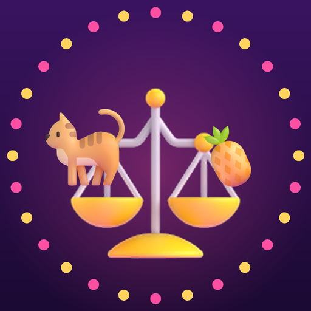

<- all projects

Tip the Scale
PC
Volume
Live
A trivia game show about weight. Guess which side is heavier, then balance it!
Is a cat heavier than three pineapples? Does a grand piano outweigh a cow? You are Dot Ounce, a small-town weights inspector whose best friend signed you up for a glitzy game show as a joke. Pick the heavier side, slide to guess a weight, and stack props on a giant brass scale that swings with real physics, then risk it all in the All-or-Nothing Final. 40 episodes across eight seasons feature 276 objects, from a honeybee to the Sun, with a real fact after every answer. Face eight rival contestants and champion Tonnage Tom, while someone backstage hides magnets under the scale.